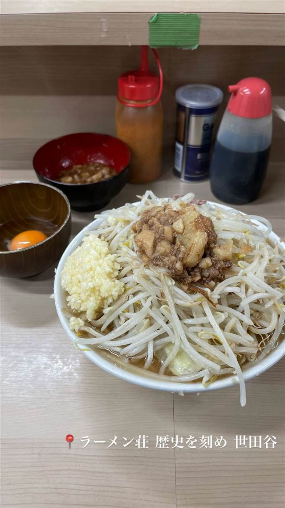

ラーメン · 二郎系(インスパイア) · 祖師ヶ谷大蔵
ラーメン荘 歴史を刻め 世田谷
麺は500gまで同じ値段、ファミマともコラボした二郎インスパイア
ラーメン荘 歴史を刻め 世田谷
大阪・下新庄が本店の二郎インスパイア系チェーン「ラーメン荘 歴史を刻め」の、2022年に東京へ初進出した世田谷店。麺500gまで同一料金のボリュームで連日行列ができ、ファミリーマートとのコラボ商品も出るほどの人気ぶり。
TRIVIA
豆知識
- 屋号は「歴史を刻めや」という周囲の一言から名付けられた
- ファミリーマートと「歴史を刻め監修 豚ラーメン」のコラボ商品を展開している
- 麺は500gまで同じ値段で増量できる
REVIEWS
世間の評判
90.3ラーメンDB4.04食べログ
麺が柔らかくなった二郎系荘
- 麺が以前のゴワゴワ食感から柔らかめの中太麺に変わったという声がある
- カエシの効いたスープと柔らかい豚を評価する声が多い
- 行列や駐車場の混雑で訪問しづらいという声もある
ラーメンデータベース 口コミ68件・最新 2026-04
| 創業 | 世田谷（祖師ヶ谷大蔵）店は2022年オープンで、大阪・下新庄本店から数えて東京初進出の店舗 |
|---|---|
| 系譜 | 大阪・下新庄に本店を持つ二郎インスパイア系ラーメンチェーン「ラーメン荘 歴史を刻め」ののれん分け系列店 |
| 看板 | 二郎インスパイアの豚骨醤油ラーメン。麺は500gまで同一料金 |
| こだわり | 自家製太麺とアブラ多めの豚骨醤油スープ、ボリューミーな野菜がヤサイマシで盛られる |
| どこから | 23区の外れ・近郊 |
| 営業時間 | 月〜土 11:00-15:00、18:00-22:00 日 11:00-22:00 |
| 予算 | 昼 ～¥1,999 夜 ～¥1,999 |
| 場所 | 祖師ヶ谷大蔵駅 東京都世田谷区砧3-5-2 |
| メモ | 連日行列必至の人気店。営業は昼11時〜15時、夜18時〜22時（土日祝は11時〜22時） |
食べたもの：二郎系ラーメン
地図で見る店の情報ラーメンDBX（その日の営業）Instagram
NEARBY
近い店・同じ系統の店
-
 ★
醤油・中華そば 祖師ヶ谷大蔵駅
世田谷中華そば 祖師谷七丁目食堂
柴崎亭店主が手がける、煮干しと小豆島醤油の中華そば
昼 ～¥999 夜 ～¥999
★
醤油・中華そば 祖師ヶ谷大蔵駅
世田谷中華そば 祖師谷七丁目食堂
柴崎亭店主が手がける、煮干しと小豆島醤油の中華そば
昼 ～¥999 夜 ～¥999
-
 ★
二郎系(インスパイア) 新小岩駅
Hi-Fat Noodle BUTCHER'S
「脂と肉を武器にする」がコンセプトの二郎系2号店
昼 ¥1,000～¥1,999 夜 ¥1,000～¥1,999
★
二郎系(インスパイア) 新小岩駅
Hi-Fat Noodle BUTCHER'S
「脂と肉を武器にする」がコンセプトの二郎系2号店
昼 ¥1,000～¥1,999 夜 ¥1,000～¥1,999
-
 ★
二郎系(インスパイア) 高田馬場駅(早稲田口)
ラーメン 池田屋 高田馬場店
京都一乗寺発の二郎系が東京初進出、豚の旨味濃厚な一杯
昼 ¥1,000～¥1,999 夜 ¥1,000～¥1,999
★
二郎系(インスパイア) 高田馬場駅(早稲田口)
ラーメン 池田屋 高田馬場店
京都一乗寺発の二郎系が東京初進出、豚の旨味濃厚な一杯
昼 ¥1,000～¥1,999 夜 ¥1,000～¥1,999
-
 ★
二郎系(インスパイア) 東北沢駅／駒場東大前駅
千里眼（センリガン）
夏季限定の冷やし中華も人気の二郎系インスパイア
昼 ～¥999 夜 ～¥999
★
二郎系(インスパイア) 東北沢駅／駒場東大前駅
千里眼（センリガン）
夏季限定の冷やし中華も人気の二郎系インスパイア
昼 ～¥999 夜 ～¥999
-
 ★
二郎系(インスパイア) 大山
自家製麺 No11
富士丸出身の店主が繰り出す350g極太麺の二郎系
夜 ¥1,000～¥1,999
★
二郎系(インスパイア) 大山
自家製麺 No11
富士丸出身の店主が繰り出す350g極太麺の二郎系
夜 ¥1,000～¥1,999
-
 ★
二郎系(インスパイア) 東大前
ラーメン用心棒 本号
千里眼の系譜を継ぐ、濃厚豚骨醤油と極太麺のまぜそば
昼 ～¥999 夜 ¥1,000～¥1,999
★
二郎系(インスパイア) 東大前
ラーメン用心棒 本号
千里眼の系譜を継ぐ、濃厚豚骨醤油と極太麺のまぜそば
昼 ～¥999 夜 ¥1,000～¥1,999